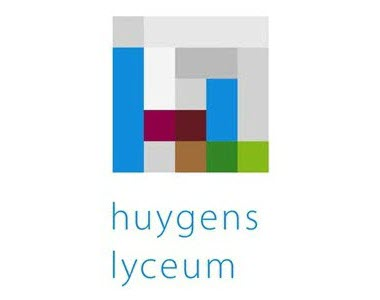

Ervaring

september 2020 - heden
Jr. IT Auditor
BDO Audit & AssuranceAls IT Auditor ben ik werkzaam voor verschillende SAP klanten en andere corperate clients in Noord-Oost Nederland. Mijn werkzaamheden omvatten IT Audits voor de jaarrekeningcontrole en controles voor ISAE verklaringen. Als onderdeel van het SAP Team ben ik betrokken bij de ontwikkeling van geautomatiseerde Audit tools. Daarnaast draag ik als onderdeel van het CAT NL Operations team bij aan het inzichtelijk maken van data door middel van Power BI.

maart 2018 - heden
Medewerker Digital Contacts
ABN AMROHet steun en toeverlaat voor klanten als onderdeel van het Messaging team. Dit team bedient de Chat (op de website) en Whatsapp kanalen. Hierin ben ik het aanspreekpunt voor vragen over Verzekeren en Lenen. Daarnaast breng ik als NPS (Netto Promoter Score) owner de feedback van klanten onder de aandacht in het team. Vanuit deze rol help ik collega's om klanten die 9+ ervaring te geven.
september 2019 - februari 2020
Afstudeeronderzoek over Project Control in SAP
Dimensys Process & IT ConsultingHet monitoren van prestaties via ERP is altijd een professionele interesse van me geweest. Daarom heb ik mijn afstudeeronderzoek geschreven over KPI's die bijdragen aan Project Control. In het onderzoek zijn interviews afgenomen bij financiële managers van grote bouwbedrijven (Heijmans, BAM, Lek/Habo, Jan Snel). De SAP product content van CPM, PPM, SAC en Dimensys' PMW is vergeleken met de bevindingen van relevante onderzoekspapers. De bevindingen zijn gebruikt om een mock-up cockpit te ontwikkelen voor bouwbedrijven met een nadruk op strategic en predictive KPI's.

februari 2017 - juli 2017
Finance Stagiar
QM DiagnosticsHet in kaart brengen en optimaliseren van de cashflow zodat QMD een verantwoordelijke groei kan aanhouden. QMD is onderdeel van de RU holding maar probeert steeds meer op eigen benen te staan. De transformatie van non-profit naar profit vereist aanpassingen van de cashflow en een kritischere kijk op de financieringsbehoefte van het bedrijf.
november 2015 - februari 2017
Adviseur LSV (Lenen, Sparen, Verzekeren)
ABN AMROAls onderdeel van het leadsteam was ik verantwoordelijk voor Lenen, Sparen en Verzekeren leads. Na een inventarisatie van de klantbehoefte, waarbij we beoordeelden of deze nog aansloot bij de huidige situatie, voerden we adviesgesprekken. De belangrijkste doelstelling van het team was het verhogen van de NPS (Netto Promoter Score).
november 2015 - november 2016
Voorzitter Barcommissie
Nijmeegse Studentenvereniging de NavigatorsVoor een jaar ben ik als voorzitter verantwoordelijk geweest over de Barcommissie van NSN. Deze commissie van 20 personen hield de bar draaiende gedurende de wekelijkse verenigingsavonden en organiseerde verschillende themaborrels.
juni 2015 - januari 2016
Audio technicus
Audius licht- en geluidsverhuurHet was mijn taak om licht- en geluidsapparatuur per bestelbus naar klanten te brengen en het daar voor te bereiden voor gebruik. Tevens werd ik af en toe ingehuurd als technicus op evenementen.
september 2011 - september 2013
Front office medewerker
4LaunchAls Front office medewerker was het m'n voornaamste taak om via internet geplaatste bestellingen te verzamelen en uit te geven. Na een paar maanden ben ik aan de slag gegaan op de Customer Support waar ik klanten hielp via de telefoon of e-mail.
Opleidingen

2018
Executive Master of IT Auditing (RE studie)
TIAS Business SchoolIn deze minor van een half jaar heb ik me verdiept in de vierde industriele revolutie: Smart Industry. Ik heb basiskennis opgedaan van programmeren en elektro-techniek. Tevens heb ik een IoT device ontwikkeld en voor Vink techniek een prijscalculatie tool gemaakt samen met een IT student.
2015 - 2020
Finance & Control
Hogeschool Arnhem en NijmegenGedurende deze opleiding heb ik me op verschillende vlakken ontwikkeld en kennis opgedaan om me klaar te stomen tot bedrijfseconoom. De nadruk van de studie lag op Bedrijfsadministratie, Externe Verslaggeving en Finance.
2018
Minor Smart Industry
Hogeschool Arnhem en NijmegenIn deze minor van een half jaar heb ik me verdiept in de vierde industriele revolutie: Smart Industry. Ik heb basiskennis opgedaan van programmeren en elektro-techniek. Tevens heb ik een IoT device ontwikkeld en voor Vink techniek een prijscalculatie tool gemaakt samen met een IT student.
2015 - 2019
WFT Basis, Schade Particulier en Consumptief Krediet
Ministerie van FinanciënVoor mijn werk bij de ABN AMRO heb ik deze WFT's gehaald zodat ik op deze gebieden advies mag uitbrengen aan klanten. Maart 2018 heb ik de PE voor Schade Particulier gehaald en maart 2019 die voor Basis en Consumptief Krediet.
2012
Deelcertificaten VWO Economie, Wiskunde A en Engels
James Boswell instituutVoor de toelating aan de Radboud Universiteit heb ik deze deelexamens behaald. Ik ben toen toegelaten tot de bachelor Economie & Bedrijfseconomie waar ik uiteindelijk mee ben gestopt.

2006 - 2012
Havo Economie & Maatschappij + Natuurkunde
Huygens Lyceum EindhovenIn Eindhoven heb ik een prachtige middelbare schooltijd beleefd met fijne docenten die me veel hebben bijgebracht. Het was een tijd waarin ik vooral bezig was met de avonturen die ik na school ging beleven.
Vaardigheden
Boekhouden
80%
Externe verslaggeving
65%
Microsoft Excel
75%